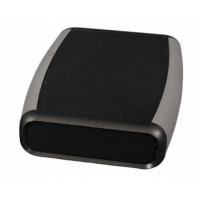
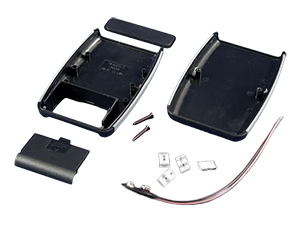

Project template containing the recommended board layout for Hammond Manufacturing 1553B-BAT:
Yellow: 1553BYLBKBAT - HM1157-ND
Translucent - Blue: 1553BTBUBKBAT - HM1156-ND
Red: 1553BRDBKBAT - HM1174-ND
Gray: 1553BGYBAT - HM1163-ND
Black: 1553BBKBKBAT - HM1155-ND
Black: 1553BBKBAT - HM915-ND
|  |  |
The "Dwgs.User" layer contains all critical dimmensions in milimeters[inches].
The "Edge.Cuts" layer contains the maximum board outline and holes to align with board standoffs.
PCB Preview: